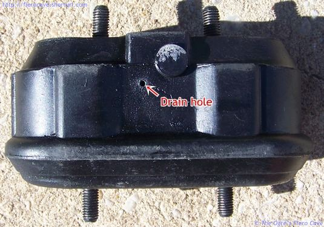

Go Home
Site Map
Go Home
Site Map
Engine & Tranny Mounts
4 cylinder motor mount
There are 2 kinds of motor mount available for Fiero 4 cylinder. (2 mounts from GM, 3 mounts from aftermarket source.) You can get them solid or liquid filled. The solid is less expensive but the liquid filled is better at isolating vibration.
Note: Do not buy the Fluid Fill ("Hydraulic") one on any year Fiero. It doesn't last very long and last even less in 86 and up w/ auto trans... The wet mount and Mono Mount Tranny goes dead in a 2-3 years. See this page.
Options:
- Use the solid rubber one for L4 w/ Manual Trans (Like Anchor part no. 2472) and modify cradle bracket. (Also very cheap option.)
- AutoZone says it has Solid Rubber for Engine mount with Auto trans and no drilling. See DEA, Part Number: A2548. Note that 2548 is filled and A2548 is solid from DEA.
- Advance Auto Parts list Anchor Part No. 2548SR is solid rubber. Note that 2548 is filled and 2548SR is solid from Anchor.
- Thanks to deceler8... Try Amazon for Anchor 2548SR. They are cheaper than auto parts store. (As of Feb-11)
Some systems doesn't list solid rubber for L4 w/ manual trans? (Like Rock Auto and Advance) Try using V6, either trans, instead of L4. V6 also uses same mount.
How do you detect a bad liquid filled mount?
First image above is a liquid filled mount and it's bad. If the motor bracket is resting against the metal body or the safety pin then the mount is bad and must be replaced. Other image is new solid rubber from Anchor and no holes drilled in either bracket.
Note! It is entirely possible to get a new liquid filled mount that is bad! When you buy a liquid filled mount, you should not hear allot of sloshing when you shake it. If it sloshes, it's bad. Don't accept it! (The mount will usually have a tiny air bubble in it but it shouldn't slosh like a half empty soda bottle.)
A sloshing mount has air in it and won't be able to support the motor. Once installed it should pass the above inspection, if not then take is back and get another. Or buy the solid rubber mount!
Changing the Mount
You need a 15mm socket and a 15mm box end or flair fitting wrench. (I prefer the flair wrench. It seems to grip better.)
Disconnect the battery.
Disconnect one end of the torque strut. (Dog Bone)
Jack the car, install a jack stand, and remove the right rear wheel. The top nuts are easier to get if the wheel is off. (Yes, I've tried both ways... take the wheel off.)
Remove all four nuts from the mount. These are lock nuts and will need to be turned with a wrench all the way off.
Jack the motor up. Use a block of wood between the jack and oil pan. (If you don't use the block the oil pan could collapse.) Keep the jack over toward the transmission to it will lift straight.
Pull out the old mount and clean the motor bracket. Don't loose the top washers that are likely buried in crud.
The new mount only fits one way.
Put the heat shield, the nuts and washers back on.
Mount issues
I haven't seen many problem on L4 engines with manual trans or all V6 with solid rubber but can happen. Most engine or transmission mounts won't last long when soaked in oil. Polyurethane mounts can resist oil/chemicals but doesn't like them.
Duke
I'm not sure if Oil killed AT type liquid filled mounts for the Dukes but, again, Oil doesn't help them. The liquid filled ones leaked the fluid and "flat" rubber left had no strength. Drill a small hole to let the oil and water out. Hole(s) are located at bottom corner in big hole in the rubber. (I made 2 Holes, 1 on each side.) Anything gets in can quickly drain out and not eating rubber.

I think L4 engine brackets have three holes. My 87 L4 does, Two to attach the mount, one for draining oil etc toward front of car. Big problem is that hole drains oil on the cradle's lower bracket. When that happens, Oil can/will drip for days. Rags etc to keeping oil off of cradle is needed.
You need to keep the engine bracket clean so oil can get to the drain hole. Many are full of crap after 25+ years of driving, changing oil, and so on.
When changing the oil, stuff a rag into the engine bracket to catch oil that runs down while you change the filter. If you can keep oil off the mount then it will last longer.
Consider making a shield for the mount out of some aluminum sheet
and sandwich it between the top of the mount and bracket. This will help keep oil that
runs down the bracket from pooling on top of the mount. Constant soaking in oil
will shorten the life of the mount. It doesn't matter much how you make it as
long as it deflects the oil that invariably spills from the filters during changing.
You can try but could hide problem. OE heat sheild attaches to bottom bolts.
Transmission and V6 Motor Mounts
These are solid rubber mounts and there's not much to them. Most of the time you can easily see damage to a bad one. Sometimes the mounts tear away from the metal parts too cleanly to be obvious. If you think a mount may be bad and you can't see damage, try gently jacking up whatever the mount supports. Jacking will spread open any tears in the rubber. Don't get rough with the jack or you could tear a good mount.
When ever you have to replace a mount make sure you loosen all the others. That way the mounts can all settle into position without loading.
Except for 86.5 and later 4 cylinders with automatic transmission, you'll almost never see just one mount that is bad. The front mounts and the dog bone are the most likely to fail but it's entirely possible for all of them to be bad. (The 86.5 and later 4 cylinder/AT setup only has one engine mount and one transmission mount. Read the torque strut article for more info...)
Oil soaked mounts may not be torn but are probably considerably softer than they should be. Oil and other chemicals break down the rubber over time. Always clean off any oil that spills on them.
Polyurethane mounts
Polly mounts are generally perceived as better than OE style vulcanized rubber mounts. In some applications they probably are but for general use they simply aren't needed and are unlikely to do anything performance wise for the car.
Depending on just what ones you buy, many OE style mounts are stronger than the ones that came with the car.
Polly can also pass more vibration to the car, especially at idle in automatic transmission cars. (This has been proven with polly dog bones. The 4 cylinder motors are the worst for this.)
Polly mounts can add some color to the engine bay. They may tolerate the heat better.
They are more resistant to oil grease and other chemicals, which shouldn't be much of an issue. The mounts shouldn't be getting allot of stuff on them in normal use. The main source of oil on mounts is usually a sloppy oil change or a leaking gasket. Rubber mounts usually last years in even the worst environments.